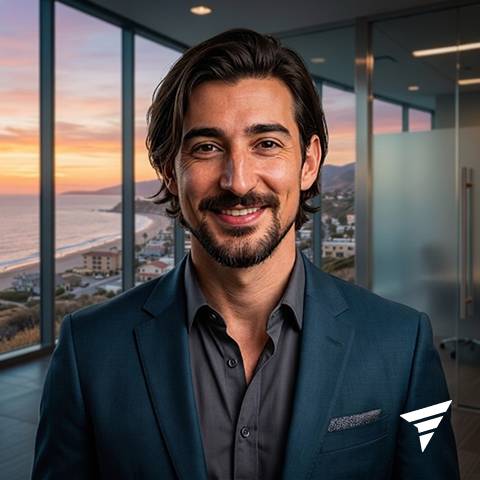

CTO/CIO, DPO and AI transformation strategist, with 15+ years of software development and 10 years in leadership roles. I combine strategic vision, deep technical fluency and creative problem-solving to transform operations and digital products — from code to strategy.
fael.tech is born from the idea of forward through technology: technology not as a destination, but as the means through which ideas, products and organizations move forward. Three core ideas guide my work:
Technology needs to be connected to an intention. Before building, I understand the problem, the context and the desired outcome.
Knowledge needs to generate motion. Strategy, architecture, design and engineering turning ideas into something concrete.
Technological motion only has value when it produces real transformation: better products, organizations and experiences.
End-to-end leadership of technology organizations — strategy, operations, governance and teams — as a full-time or fractional CTO/CIO.
Structuring AI adoption agendas and agentic-based operations across organizations of different sizes and maturity levels.
Acting as DPO, embedding digital security and compliance practices (LGPD/GDPR) at organizational scale.
Strong technical foundation in web development and UX (JS ecosystem), with a focus on solution architecture and creative coding.